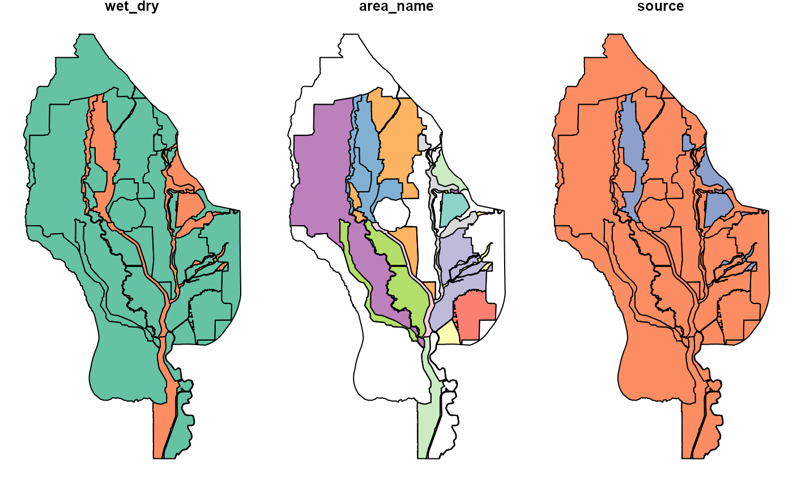

ff_wetdry.RdThis sf dataset contains polygons identifying which parts of the Sacramento Valley are behind levees ("dry") or directly exposed to rivers or floodways ("wet")
ff_wetdryAn object of class sf (inherits from tbl_df, tbl, data.frame) with 125 rows and 2 columns.
compiled from data from Ducks Unlimited and others
wet_dry = identifier of the enclosed area as "wet" or "dry"
head(ff_wetdry)
#> Simple feature collection with 6 features and 1 field
#> Geometry type: POLYGON
#> Dimension: XY
#> Bounding box: xmin: 6474596 ymin: 2028968 xmax: 6766993 ymax: 2447911
#> Projected CRS: NAD83(2011) / California zone 2 (ftUS)
#> # A tibble: 6 × 2
#> wet_dry geometry
#> <chr> <POLYGON [US_survey_foot]>
#> 1 Dry ((6623854 2379216, 6623853 2379008, 6623831 2378963, 6623827 2378955,…
#> 2 Dry ((6735708 2143171, 6735731 2143223, 6735750 2143375, 6735787 2143753,…
#> 3 Dry ((6645812 2284995, 6645847 2285050, 6649373 2285132, 6649253 2285059,…
#> 4 Dry ((6674774 2180693, 6674794 2180737, 6674799 2180768, 6674805 2180781,…
#> 5 Dry ((6482270 2236010, 6482264 2236056, 6482274 2236091, 6482270 2236010))
#> 6 Dry ((6626920 2234118, 6626914 2234118, 6626914 2234122, 6626920 2234118))
plot(ff_wetdry)
